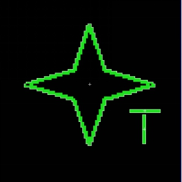

Trong lĩnh vực kiểm tra bề mặt，đối với các khuyết tật（vết bẩn hoặc khuyết tật nhỏ）trên bề mặt vật thể có nền bề mặt trơn、biến thiên xám、vân nền nông，công cụ phát hiện khuyết tật kiểm tra sự thay đổi mức xám trong vùng lân cận thông qua lấy mẫu，tức là gradient mức xám，và phản ánh trong vùng có tồn tại khuyết tật hay không dựa trên mức độ thay đổi của gradient mức xám。Phương pháp này ở một mức độ nhất định tránh được ảnh hưởng của ánh sáng，khắc phục nhược điểm của phương pháp kiểm tra dựa trên mức xám。Sơ đồ minh họa như Hình 1。
| Phân loại | Tên tham số | Mô tả tham số |
|---|---|---|
| Cửa sổ thuộc tính | Vùng ROI | Vùng công cụ thực hiện kiểm tra，chia thành 7 loại：toàn bộ ảnh、ROI hình chữ nhật、ROI hình chữ nhật affine、ROI hình tròn、ROI hình vành khuyên、ROI hình elip và ROI đa giác。 |
| Loại kiểm tra | Loại kiểm tra của công cụ phát hiện khuyết tật được chia thành 2 loại：dựa trên diện tích và dựa trên phân nhóm。Khi chọn loại kiểm tra dựa trên phân nhóm，sẽ hiển thị ba tham số：có lấp đầy hay không、có lọc diện tích hay không、có chỉ hiển thị khuyết tật sau khi lọc hay không。 |
|
| Có lấp đầy hay không | Chọn “Có”，thì sẽ lấp đầy các khuyết tật có vùng khuyết tật nhỏ hơn diện tích chỉ định，điều này sẽ ảnh hưởng đến số lượng nhóm khuyết tật và tổng lượng khuyết tật。Chỉ có hiệu lực khi loại kiểm tra chọn dựa trên phân nhóm。 | |
| Có lọc diện tích hay không | Chọn “Có”，thì sẽ lọc các khuyết tật trong kết quả có diện tích nhỏ hơn giới hạn dưới lọc diện tích、lớn hơn giới hạn trên lọc diện tích。Chỉ có hiệu lực khi loại kiểm tra chọn dựa trên phân nhóm。 | |
| Có chỉ hiển thị khuyết tật sau khi lọc hay không | Chọn “Có”，thì chỉ hiển thị khuyết tật sau khi lọc，nếu không sẽ hiển thị toàn bộ khuyết tật。Chỉ có hiệu lực khi loại kiểm tra chọn dựa trên phân nhóm。 | |
| Kích thước khuyết tật hướng X | Kích thước của khuyết tật nhỏ nhất được phát hiện theo hướng X。 | |
| Kích thước khuyết tật hướng Y | Kích thước của khuyết tật nhỏ nhất được phát hiện theo hướng Y。 | |
| Lượng dịch chuyển hướng X | Bước dịch chuyển quét theo hướng X。 | |
| Lượng dịch chuyển hướng Y | Bước dịch chuyển quét theo hướng Y。 | |
| Số lượng đoạn so sánh hướng X | Đoạn so sánh được sử dụng khi tính cấp độ khuyết tật tại vị trí một điểm lấy mẫu nào đó theo hướng X，phạm vi giá trị của đoạn so sánh là [2, 20]。 | |
| Số lượng đoạn so sánh hướng Y | Đoạn so sánh được sử dụng khi tính cấp độ khuyết tật tại vị trí một điểm lấy mẫu nào đó theo hướng Y，phạm vi giá trị của đoạn so sánh là [2, 20]。 | |
| Ngưỡng cấp độ khuyết tật | Tham số biểu thị mức độ khuyết tật tại vị trí hiện tại，nếu cấp độ khuyết tật của vị trí hiện tại vượt quá ngưỡng cấp độ khuyết tật này，thì xác định vị trí hiện tại thuộc vùng khuyết tật。 | |
| Hướng kiểm tra | Tức là hướng quan tâm khi khuyết tật xuất hiện（thay đổi mức xám），hướng kiểm tra của công cụ phát hiện khuyết tật được chia thành 3 loại，hướng X、Y và XY，chủ yếu sử dụng hướng XY。Khi chỉ quan tâm hướng X hoặc Y có tồn tại khuyết tật hay không，chọn hướng X hoặc Y；khi quan tâm cả hai，chọn hướng XY。 | |
| Bật tính toán song song | Có bật tính toán song song hay không，khi chọn Có，thuật toán sẽ bật phương thức tính toán song song OpenMp，có thể tăng tốc độ tính toán，nhưng có thể xảy ra tình trạng thời gian xử lý không ổn định，khi chọn Không，thuật toán sẽ tắt tính toán song song OpenMp。 | |
| Phần trăm số luồng | Thiết lập phần trăm số luồng của tính toán song song，phạm vi hợp lệ là (0, 0.75]，tương ứng biểu thị phạm vi phần trăm (0%, 75%]。 | |
| Cửa sổ hình ảnh | Vùng ROI | Vùng kiểm tra hình chữ nhật/hình chữ nhật affine/hình tròn/hình vành khuyên/hình elip/đa giác được chỉ định trong ảnh。 |
| Ảnh đầu vào | Hiển thị ảnh cần kiểm tra。 | |
| Chuỗi dữ liệu | Ảnh đầu vào | Chiều rộng、chiều cao、kích thước pixel của ảnh đầu vào，giống tham số ảnh đầu vào của cửa sổ hình ảnh。 |
| Biến đổi tuyến tính 2D | Biến đổi tịnh tiến、xoay、co giãn của mục tiêu so với template。 | |
| Giao diện nâng cao | Không có | Không có |
| Phân loại | Tên tham số | Mô tả tham số |
|---|---|---|
| Cửa sổ giám sát | Ảnh đầu vào | Xuất chiều rộng、chiều cao、kích thước pixel của ảnh。 |
| Số lượng nhóm khuyết tật | Khi tham số loại kiểm tra trong cửa sổ thuộc tính chọn dựa trên phân nhóm，số lượng nhóm khuyết tật。Khi chọn dựa trên diện tích，giá trị số lượng nhóm khuyết tật là 1。 | |
| Tổng lượng khuyết tật | Tổng lượng khuyết tật phát hiện được。 | |
| Kết quả khuyết tật | Thông tin cụ thể của khuyết tật，bao gồm lượng khuyết tật và tâm khuyết tật của từng khuyết tật。 | |
| Kết quả thực thi | Kết quả thực thi công cụ。 | |
| Thời gian thực thi | Thời gian thực thi công cụ。 | |
| Cửa sổ hình ảnh | Ảnh đầu vào | Hiển thị ảnh kết quả thực thi công cụ，giống tham số ảnh đầu vào của cửa sổ giám sát。 |
| Kết quả khuyết tật | Hiển thị kết quả khuyết tật trong vùng tìm kiếm ảnh。 | |
| Kết quả thực thi | Hiển thị kết quả thực thi công cụ，thực thi thành công hiển thị “OK”，thực thi thất bại hiển thị “NG”，giống tham số kết quả thực thi của cửa sổ giám sát。 | |
| Ảnh kết quả | Ảnh kết quả phát hiện khuyết tật（ảnh năng lượng sau khi lấy mẫu） | |
| Hiển thị Defect | Tất cả kết quả Blob của phát hiện khuyết tật（kết quả khuyết tật） | |
| Chuỗi dữ liệu | Số lượng nhóm khuyết tật | Số lượng nhóm khuyết tật，cung cấp cho công cụ phía sau sử dụng，giống tham số số lượng nhóm khuyết tật của cửa sổ giám sát。 |
| Tổng lượng khuyết tật | Tổng lượng khuyết tật phát hiện được，cung cấp cho công cụ phía sau sử dụng，giống tham số tổng lượng khuyết tật của cửa sổ giám sát。 | |
| Kết quả khuyết tật | Thông tin cụ thể của khuyết tật，bao gồm lượng khuyết tật và tâm khuyết tật của từng khuyết tật，cung cấp cho công cụ phía sau sử dụng，giống tham số kết quả khuyết tật của cửa sổ giám sát。 | |
| Đồ họa kết quả gradient | Ảnh xác định cấp độ khuyết tật | |
| Ảnh kết quả trong ảnh gốc | Ảnh kết quả phát hiện khuyết tật（ảnh năng lượng được hiển thị trên ảnh gốc） |
Kiểm tra dựa trên diện tích chỉ quan tâm trên bề mặt vật thể có tồn tại khuyết tật hay không，cũng như tổng lượng khuyết tật，không quan tâm đến hình thái cụ thể và thông tin phân bố của khuyết tật；kiểm tra dựa trên phân nhóm ngoài việc quan tâm đến tổng lượng khuyết tật，vẫn sẽ quan tâm đến số nhóm khuyết tật、hình thái cụ thể và phân bố của từng nhóm khuyết tật，đồng thời còn có thể tiền xử lý và sàng lọc khuyết tật。Ví dụ có thể lấp đầy khuyết tật theo tình huống cụ thể，hoặc lọc diện tích đối với khuyết tật phát hiện được。

Khi khuyết tật tương đối nhỏ，kích thước khuyết tật theo hướng X、Y có thể thiết lập nhỏ hơn；ngược lại có thể tăng phù hợp để nâng cao hiệu suất kiểm tra，nhưng kích thước khuyết tật không được thiết lập quá lớn，nếu không có thể không phát hiện được khuyết tật。
Lượng dịch chuyển theo hướng X、Y thiết lập càng lớn，số điểm tham gia tính toán lấy mẫu trong ảnh càng ít，nhưng nhỏ nhất là một pixel，đồng thời lượng dịch chuyển càng lớn thì điểm lấy mẫu càng thưa，hiệu suất kiểm tra càng cao。
Số lượng đoạn so sánh theo hướng X、Y thiết lập càng lớn，thì phạm vi bị ảnh hưởng của khuyết tật càng lớn。Nếu muốn thu được biên dạng khuyết tật tương đối tinh细，thì số lượng đoạn so sánh nên thiết lập nhỏ hơn một cách phù hợp。Số lượng đoạn so sánh càng lớn，hiệu suất kiểm tra càng thấp。
Khi loại kiểm tra chọn dựa trên diện tích，tọa độ tâm trong kết quả khuyết tật của cửa sổ giám sát là (-1.000000，-1.000000)。
参见“\Samples\瑕疵检测工具.gvp”。